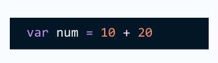

JS Operators
JavaScript operators are symbols that are used to perform operations on operands. For example:
Here, + is the arithmetic operator and = is the assignment operator.
There are following types of operators in JavaScript.
Arithmetic Operators
Comparison (Relational) Operators
Bitwise Operators
Logical Operators
Assignment Operators
Special Operators
JavaScript Arithmetic Operators
Arithmetic operators are used to perform arithmetic operations on the operands. The following operators are known as JavaScript arithmetic operators.
| Operator | Description | Example |
|---|---|---|
| + | Addition | 10+20 = 30 |
| - | Subtraction | 50-40 = 10 |
| * | Multiplication | 50*4 = 200 |
| - | Division | 50/2 = 25 |
| % | Modulus | 20%10 = 0 |
| ++ | Increment | var a=100 ; a++; Now a = 101 |
| -- | Decrement | var a=100 ; a--; Now a = 99 |
JavaScript Comparison Operators
The JavaScript comparison operator compares the two operands. The comparison operators are as follows:
| Operator | Description | Example |
|---|---|---|
| == | is equal to | 10===20 = false |
| === | Identical (equal and of same type) | 10==20 = false |
| != | Not equal to | 10!=20 = true |
| - | Not identical | 20!==20 = false |
| > | Greater than | 20 > 5 = true |
| >= | Greater than or equal to | 20 > = 20 = true |
| < | Less than | 20 < 5 = false |
| <= | Less than or equal to | 20 <= 20 = true |
JavaScript Bitwise Operators
The bitwise operators perform bitwise operations on operands. The bitwise operators are as follows:
| Operator | Description | Example |
|---|---|---|
| & | Bitwise AND | (10==20 & 20==33) = false |
| ! | Bitwise OR | (10==20 | 20==33) = false |
| ^ | Bitwise XOR | (10==20 ^ 20==33) = false |
| ~ | Bitwise NOT | (~10) = -10 |
| << | Bitwise left shift | (10<<2) = 40 |
| >> | Bitwise Right shift | (10>>2) = 2 |
| >>> | Bitwise Right shift with zero | (10>>>2) = 2 |
JavaScript logical Operators
The following operators are known as JavaScript logical operators.
| Operator | Description | Example |
|---|---|---|
| && | Logical AND | (10==20 && 20==33) = false |
| || | Logical OR | (10==20 || 20==33) = false |
| ! | Logical NOT | !(10==20) = true |
JavaScript Assignment Operators
The following operators are known as JavaScript assignment operators.
| Operator | Description | Example |
|---|---|---|
| = | Assign | 10+15=25 |
| += | Add and assign | var a=10; a+=20; Now a = 30 |
| -= | Subtract and assign | var a=20; a-=10; Now a = 10 |
| *= | Multiply and assign | var a=10; a*=20; Now a = 200 |
| /= | Divide and assign | var a=10; a/=2; Now a = 5 |
Now that you know operators in javascript, let's learn type conversion in javascript
Share this page on :